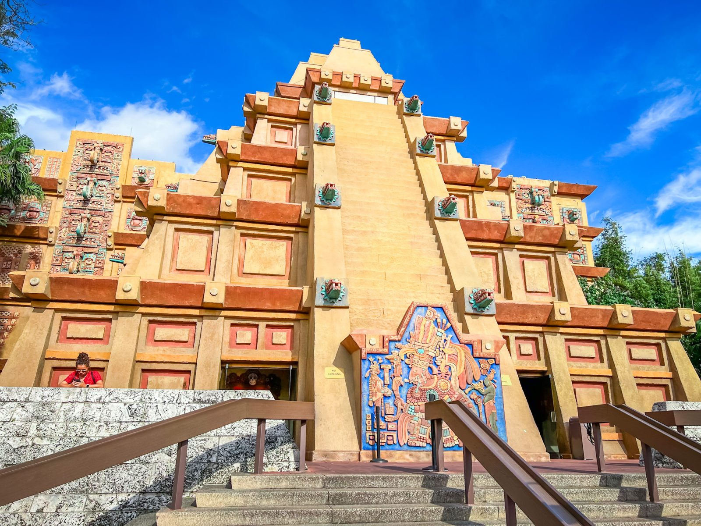
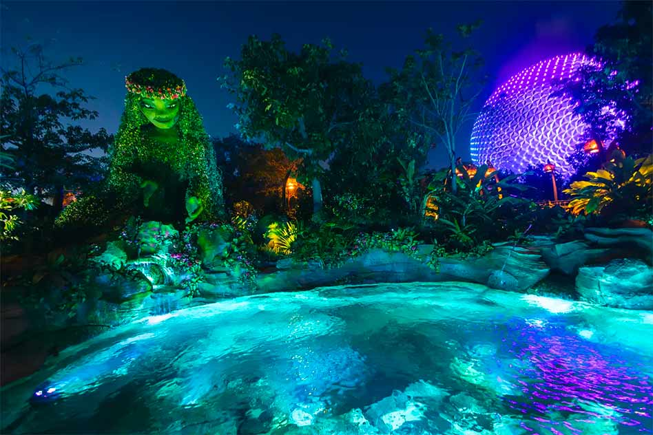

EPCOT celebrates human achievement, innovation, technology, and cultures from around the world. The park is divided into four neighborhoods—World Celebration, World Discovery, World Nature, and World Showcase—each offering a unique mix of attractions, entertainment, dining, and interactive experiences. World Celebration serves as the heart of EPCOT and welcomes guests with beautiful gardens, open spaces, and the park's iconic landmark, Spaceship Earth. This neighborhood also includes Dreamers Point, featuring the Walt the Dreamer statue, and CommuniCore Hall and Plaza, which host seasonal festivals, exhibits, and live entertainment throughout the year. World Discovery focuses on science, technology, and adventure. World Nature celebrates the beauty of our planet and the importance of conservation. Attractions include Living with the Land, a relaxing boat tour through Disney's innovative greenhouses, and the large aquarium where guests can observe dolphins, sea turtles, rays, and other marine life. World Showcase features eleven country pavilions surrounding the scenic World Showcase Lagoon. The countries include Mexico, Norway, China, Germany, Italy, The American Adventure, Japan, Morocco, France, United Kingdom, and Canada. Each pavilion showcases authentic architecture, cultural exhibits, entertainment, shopping, and cuisine inspired by its country. EPCOT is also well known for its year-round festivals, including the Festival of the Arts, the Flower & Garden Festival, International Food & Wine Festival, and the Festival of the Holidays.
Top Rides
- Guardians of the Galaxy: Cosmic Rewind
- Soarin' Around the World
- Remy's Ratatouille Adventure
- Frozen Ever After
- Test Track
Top Restaurants
- Space 220 Restaurant
- Le Cellier Steakhouse
- Via Napoli Ristorante Pizzeria
- Garden Grill Restaurant
- Chefs de France
Top Shows
- Luminous: The Symphony of Us
- The American Adventure
- Turtle Talk with Crush
- Awesome Planet
- Encanto Celebration!